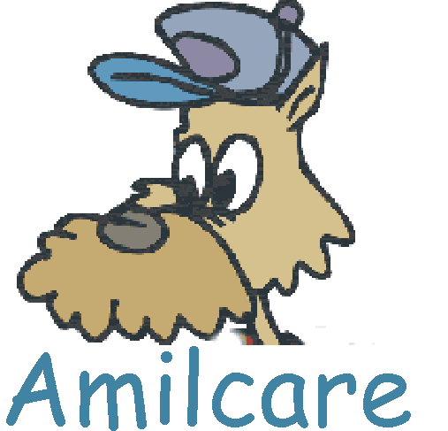

|
Web homepage:http://nlp.shef.ac.uk/amilcare/ Developers: Fabio Ciravegna Owner: University of Sheffield |

|
Addresses KM Challenge(s): Knowledge Acquisition
Builds on other technologies: Java, XML, HTML, Gate
Please contact Fabio Ciravegna to obtain access.
Technical requirements: Windows 2000, XP, Java Runtime Environment 1.3, 512 Mb RAM, 800 MHz Processor
| MnM | developed at the Open University, UK |
| Ontomat | developed at the University of Karlsruhe |
| Melita | developed at the University of Sheffield |
| Merck (D) | ISOCO (SP) |
| Quinary (I) | Ontoprise (D) |
| University College Dublin (IE) | CNRS (F) |
Key document:
Fabio Ciravegna, Designing Adaptive Information Extraction
for the Semantic Web in Amilcare, to appear in S. Handschuh and
S. Staab (eds), "Annotation for the Semantic Web" to appear
in the Series "Frontiers in Artifical Intelligence and Applications"
by IOS Press, Amsterdam, 2003.
Other relevant documents
Fabio Ciravegna , Alexiei
Dingli, Daniela Petrelli and Yorick Wilks:
"User-System
Cooperation in Document Annotation based on Information Extraction
"
in Asuncion Gomez-Perez, V. Richard Benjamins (eds.): "Knowledge Engineering
and Knowledge Management (Ontologies and the Semantic Web)", Proceedings
of the 13th International Conference on Knowledge Engineering and Knowledge
Management (EKAW02), 1-4 October 2002 - Sigüenza (Spain), Lecture Notes
in Artificial Intelligence 2473, Springer Verlag .
Available in the eprints archive.
Fabio Ciravegna
, Alexiei Dingli, Daniela Petrelli and Yorick Wilks:
"Document Annotation via Adaptive Information Extraction"
Poster at the 25th Annual International ACM SIGIR Conference
on Research and Development in Information Retrieval August 11-15,
2002, in Tampere, Finland.
Fabio Ciravegna
:
"Adaptive
Information Extraction from Text by Rule Induction and Generalisation"
in Proceedings of 17th
International Joint Conference on Artificial Intelligence (IJCAI 2001)
, Seattle, August 2001.
Available in the eprints archive.
Fabio Ciravegna
:
"(LP)
2, an Adaptive Algorithm for Information Extraction from Web-related
Texts"
in Proceedings
of the IJCAI-2001 Workshop on Adaptive Text Extraction and Mining
, held in conjunction with the 17th International Conference on
Artificial Intelligence (IJCAI-01), Seattle, August, 2001
Available in the eprints archive.
Fabio Ciravegna
and Daniela Petrelli:
"User
Involvement in Adaptive Information Extraction: Position Paper"
in Proceedings
of the IJCAI-2001 Workshop on Adaptive Text Extraction and Mining
, held in conjunction with the 17th International Conference on
Artificial Intelligence (IJCAI-01), Seattle, August, 2001
Available in the eprints archive.